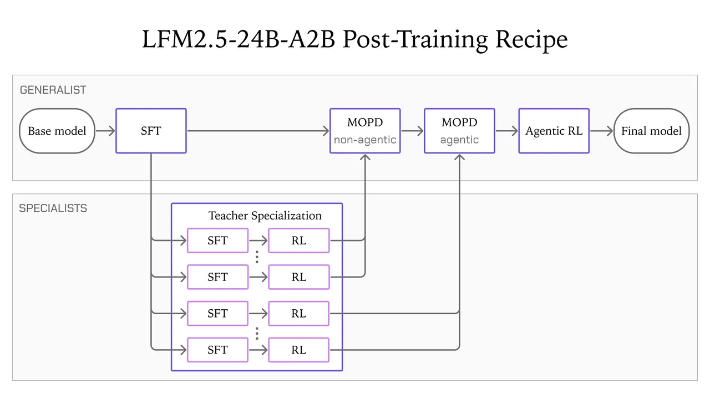
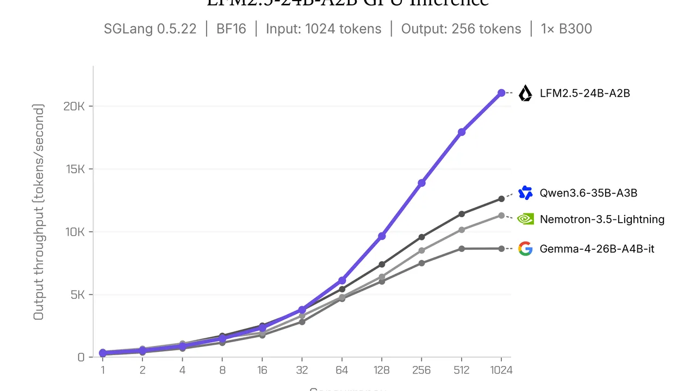

Liquid AI ships LFM2.5-24B-A2B: a 24B open-weights model that thinks before it acts
Liquid AI released LFM2.5-24B-A2B today — a 24-billion-parameter reasoning model with just 2 billion active parameters per token, built to run AI agents on your own hardware. It's the largest and final model of the LFM2.5 family, and it's open-weight: both the instruct model and a base version are on Hugging Face now.
The pitch is simple: agents that live on your laptop, not in someone else's cloud. Because only 2B parameters are active per token, every reasoning token is cheap — so an agent can churn through long, multi-step tasks continuously without renting a GPU cluster. The model always produces a chain of thought before its final answer, calls tools, and works inside popular agent harnesses.
What's new over LFM2
LFM2.5-24B-A2B builds on LFM2-24B-A2B and keeps its hybrid architecture: 40 layers, 64 experts per mixture-of-experts block with top-4 routing, and a backbone that pairs gated short convolution blocks with a small number of grouped-query attention blocks. Two things change: the context window jumps from 32K to 131K tokens, and an in-place tokenizer expansion doubles the vocabulary from 65K to 128K tokens for better non-Latin text handling. Unlike its predecessor, the new model is reasoning-only — it writes out an explicit chain of thought before every answer.
Pre-training scaled from roughly 17 trillion to 33 trillion tokens. Mid-training added 2 trillion tokens at 32K context weighted toward reasoning, math, code, instruction following and multilingual text, then 300 billion tokens at 131K context weighted toward long-context data — with tool calls and multi-turn trajectories appearing throughout. The model supports 16 languages, including English, Arabic, Chinese, French, German, Japanese, Korean, Spanish, Hindi and Polish.

Trained inside the agent harnesses it will run in
Post-training runs in five stages: supervised fine-tuning, teacher specialization, multi-domain on-policy distillation on non-agentic tasks, a second distillation stage focused on agentic tasks, and — the distinctive step — agentic reinforcement learning run inside actual agent harnesses: OpenClaw, Hermes Agent, Pi and OpenCode. Training the model inside the environments it will serve in is the whole bet: agentic behavior as a trained property, not a prompt-engineering trick.
The benchmarks: agent tasks, not trivia
Liquid AI evaluated the model on 16 benchmarks covering tool use, agentic workflows, knowledge, instruction following, math and coding — all run with vLLM — against Qwen3.6-35B-A3B, Gemma-4-26B-A4B-it and Nemotron-3.5-Lightning. It is the smallest model in the group, yet competitive with models carrying roughly 50% more total and active parameters.
The strengths are tool use and instruction following. It leads or matches the field on five of eight tool-use and agentic benchmarks — AutomationBench (27.69, more than triple the next-best 8.72), LiveClaw (48.09 vs 38.19), BFCLv4 (65.01), ToolSandbox (80.71) and τ³-Bench Banking (8.04) — and tops all three instruction-following benchmarks (IFEval 96.75, IFBench 74.69, Multi-IF 84.38). The weaknesses are where you'd expect for a small active-parameter model: knowledge-heavy GPQA Diamond (74.42 vs 83.69 for Qwen3.6) and coding benchmarks like SWE-Bench Verified (51.00 vs 66.20) and WebArena (26.75 vs 37.62). Liquid AI's own advice: pair it with retrieval or web search for knowledge-heavy workloads. And the honest caveat: these are the vendor's own lab results, not production deployments.

Fast on the hardware you already own
On consumer machines the model decodes 184 tokens per second on an Apple M5 Max and 114 tokens per second on a Ryzen AI Max+ 395 — up to 1.7x faster than the next-best compared model, with the lowest memory use. On a single NVIDIA B300 at high concurrency it exceeds 21,000 output tokens per second. Launch support covers llama.cpp, MLX, vLLM, SGLang and ONNX.
To use it in an agent: serve the model locally behind any OpenAI-compatible backend, then point your harness at that endpoint. Liquid AI ships example configs for OpenClaw and Pi, plus a Hermes Agent setup (131,072-token context, tool-use enforcement on) and fine-tuning tutorials for adapting it to a specific task. It loads through the standard path — transformers>=5.0.0, model id LiquidAI/LFM2.5-24B-A2B — in bfloat16.
The broader signal: the race for useful on-device agents is now a training-recipe race, not just a size race. A 24B model with 2B active parameters that was reinforcement-trained inside OpenClaw and Pi is a different artifact than a chat model pointed at a terminal — and it runs where your data already is. If your agent workload is tool calls and instructions rather than trivia, this is the most interesting open-weights release of the week.
Sources: Liquid AI — "Run fast, private agents on-device with LFM2.5-24B-A2B" (October 13, 2026); Unite.AI — "Liquid AI Releases Open-Weight LFM2.5-24B-A2B for On-Device Agents" (October 13, 2026); IA en un minuto — "Liquid AI releases LFM2.5-24B-A2B for on-device agents" (October 13, 2026).